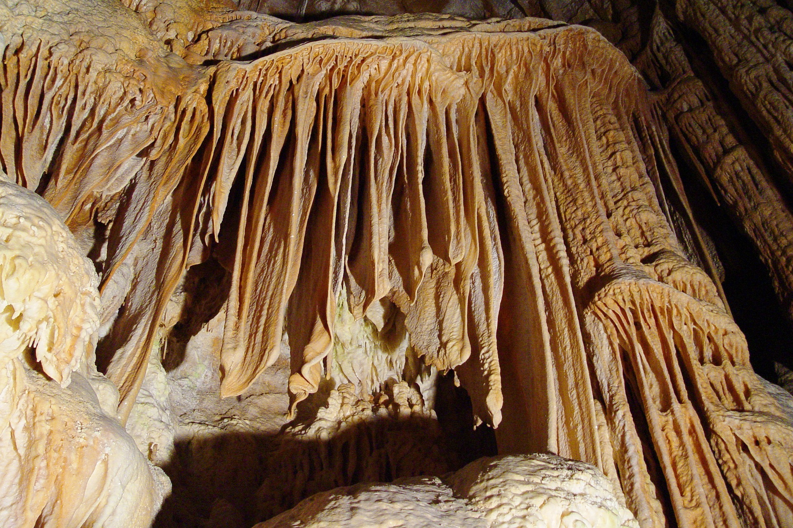
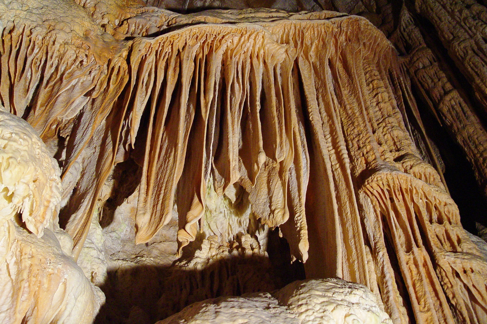
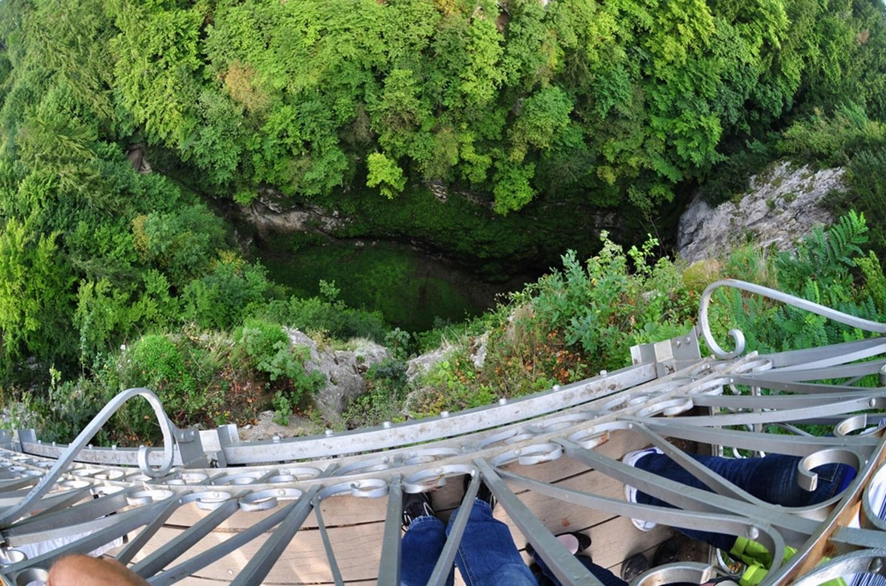
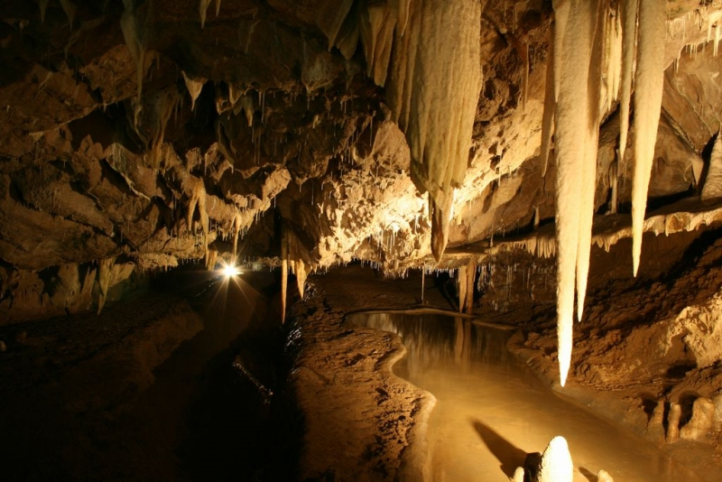
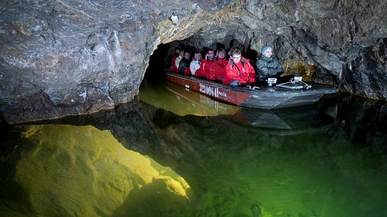
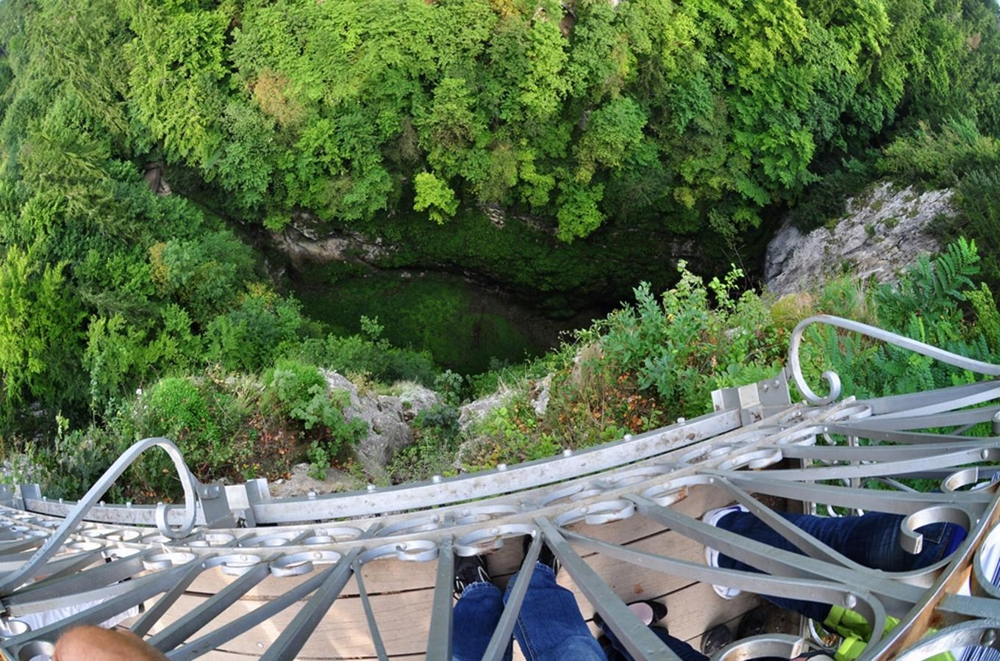
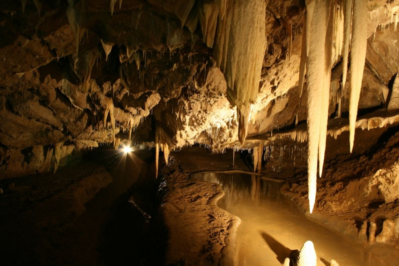
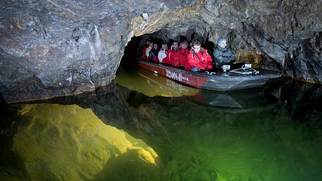

Propast Macocha je více než 138,5 metrů hluboká a je největší propastí svého druhu ("Light hole") v České republice a i ve střední Evropě. Horní část propasti je dlouhá 174 metrů a široká 76 metrů. Na okraji propasti jsou dva vyhlídkové můstky. První z nich byl vybudován v roce 1882 - je umístěn v nejvyšším bodě. Druhý z nich pochází z roku 1899, nachází se 92 metrů nad spodní částí propasti a je z něho velmi dobře vidět na dno.
Propast Macocha, jež dostala jméno podle pověsti ze 17. století, vznikla zřícením stropu velké jeskyně. Proto také její dno částečně pokrývá suť, což jsou zbytky zborceného stropu. Dnem propasti protéká říčka Punkva, která napájí dvě jezírka. Horní jezírko je hluboké přibližně 13 metrů a je vidět shora. Dolní jezírko je ukryto mezi skalami, takže není shora vidět, a jeho hloubka přesahuje 49 metrů (doposud nebylo dosaženo dna).
Říčka Punkva vzniká soutokem celé řady ponorných zdrojnic, které protékají na území vápenců. Vody Punkvy se poprvé objevují na denním světle na dně Macochy. Zde v Dolním jezírku znovu mizí do podzemí a protékají Punkevními jeskyněmi. Celý komplex představuje několik desítek kilometrů jeskyní.
Propast Macocha součástí nejdelšího jeskynního systému v České republice.
Amatérská jeskyně leží v severní části Moravského krasu a je nejdelším jeskyním systémem v České republice - téměř 35 km. Jeskyně je tvořena Sloupsko-šošůvskými jeskyněmi, jeskyní Novou Rasovnou s propadáním Bílé vody, jeskyněmi Piková dáma, Spirálka, C 13, Starou a Novou Amatérskou jeskyní, propastí Macochou a ve vývěrové části pak Punkevními jeskyněmi.
 

 




